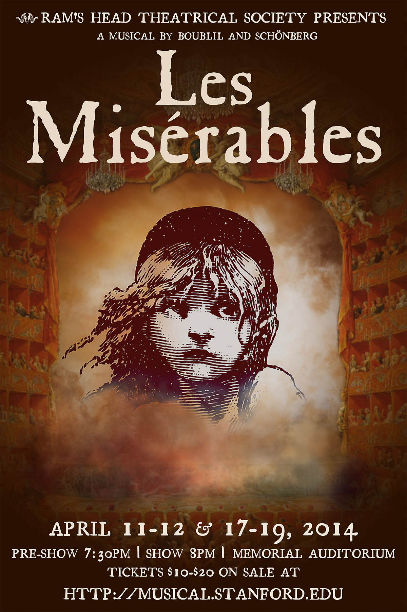

About


Les Misérables will be performed April 11-12 & 17-19, 2014 at 8pm at Stanford University’s Memorial Auditorium, with a pre-show performance starting around 7:30pm.
Winner of 8 Tony Awards, including Best Musical, Les Misérables is an international sensation that has thrilled generations of audiences around the world. Epic, grand, and uplifting, the musical has spawned hits like "I Dreamed a Dream" and "One Day More" and inspired countless performances and interpretations. With its powerful affirmation of the human spirit, Les Misérables is a true masterpiece and global phenomenon.
Contact Producer Kelly Gregg with any questions about this production or to get involved.
To find out more about Ram’s Head Theatrical Society, visit our website.
Frequently Asked Questions
What is the pre-show? What is OGEP?
The pre-show is an immersive audience experience that we’ve created for this production and are calling the Opera-Going Experience Project. This project was developed as part of a larger effort to set this production of Les Misérables in a 19th century Parisian opera-house akin to the type Victor Hugo would have frequented while writing Les Misérables (the novel). We won’t give much about the experience away here, but patrons can look forward to socializing in traditional french arcades, enjoying refreshments before the show and being in the company of some of 19th Paris’ most renown opera-goers (think Claude Monet, Richard Wagner, Victor Hugo himself, etc.)
Why are you doing this project?
While Les Misérables is a story couched in historical fiction, it is surrounded by many historical misperceptions. Most notably, many patrons leave productions of Les Misérables thinking they’ve seen a musical about the French Revolution—in actuality, the musical depicts characters involved in the June Rebellion of 1832, a small skirmish that occurred over 30 years after the French Revolution. In exploring this misperception and its origins, our team began to realize that the musical itself does not necessarily give audiences all the context they need to fully understand and appreciate the work from a historical point of view. Therefore, we wanted to figure out how we could develop a unique element that would provide this context. With this determination to explore the history surrounding the musical as our creative starting point, we first went back to the original text, the history of the novel and the culture surrounding its publication.
Interestingly, Victor Hugo’s most prolific writing period coincided with the famous height of the Grand Opéra in 19th century France. So, it seems fitting that his work has been adapted into one of today’s most beloved opera-esque musicals. And Hugo himself had very specific views on the theater. Most notably, he believed in the importance of the audience and their role in creating a live spectacle. In the novel Les Misérables he writes: “A theater is like a ship capsized with its hold uppermost; and this hold, the gallery, is the place of the gods” (Hugo, 496).
Similarly, dramatic norms at Parisian opera in this era were quite in line with Hugo’s views. At the Paris Opéra, the audience and their participation in the dramatic event were just as important--if not more so--than the drama that played out on stage. Going to the theater was an entirely communal and social experience.
With this view of Hugo’s and the culture of the time in mind, our next step in development was to take what we knew about the history surrounding the novel’s release and this emphasis on the audience and to synthesize them. And so finally, we developed an aim of taking modern audiences back to the 19th century and allowing them to experience Les Misérables as Hugo and his contemporaries would have if it premiered at the Paris Opéra in 1862, at the time that the novel was published. We realized that if we transformed Stanford's Memorial Auditorium into Salle le Peletier, the home of the Paris Opéra in 1862, it might allow Stanford patrons to feel as though they are attending the premiere of the acclaimed and controversial musical in 1862. By creating a French opera-going experience before, during, and after the show itself, we hope to provide a rich theater-going experience for Stanford audiences that will expand beyond that which was seen on stage.
Accordingly, we encourage audiences to arrive at the theater around 7:30PM, so they have ample time to take part in the Opera-Going Experience Project before the mainstage show begins.
Les Misérables Is presented through special arrangement with Music Theatre International (MTI). All authorized performance materials are also supplied by MTI. 421 West 54th Street, New York, NY 10019 Phone: 212-541-4684 Fax: 212-397-4684 www.MTIShows.com - See more at: http://www.mtishows.com/show_detail.asp?showid=000134#sthash.vSfVBm6l.dpuf.

{kind=link}